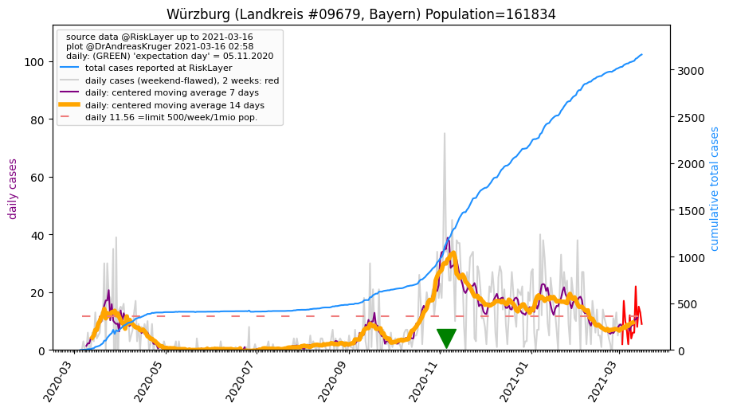
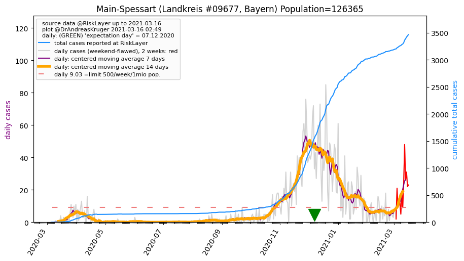
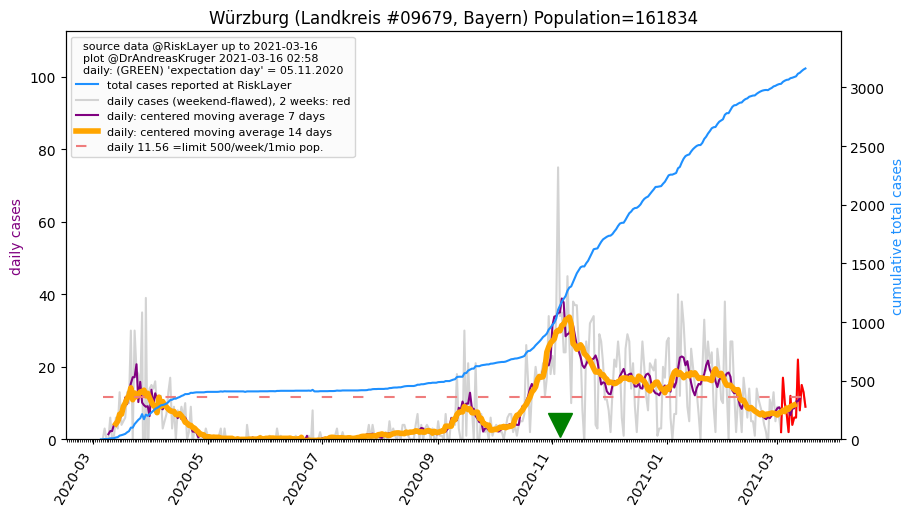
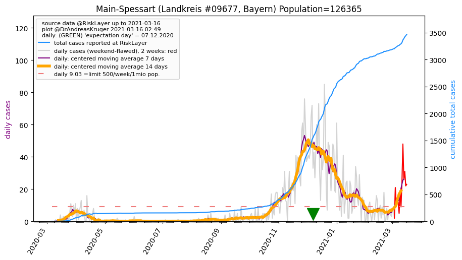

")

")
")
")
")
")
")

| Main-Tauber-Kreis_LK (0.0 km) |
Würzburg_LK (24.5 km)  |
Würzburg_KS (29.4 km) |
| Hohenlohekreis_LK (33.2 km) |
Neckar-Odenwald-Kreis_LK (33.9 km) |
Miltenberg_LK (41.6 km) |
| Kitzingen_LK (43.9 km) |
Schwäbisch Hall_LK (48.2 km) |
Main-Spessart_LK (48.4 km)  |
All plots are regenerated with new data every night. Beware this temporary hotspot is an experimental page - it might get removed, so please do not link to it. Instead link to project http://tiny.cc/cov19de.